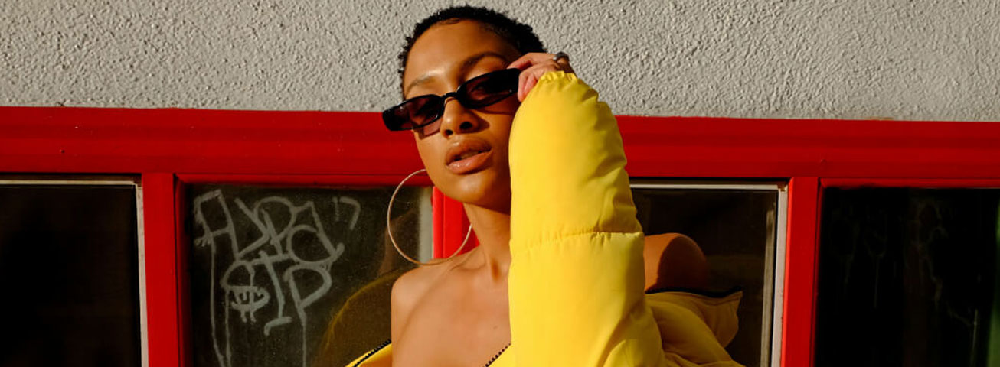
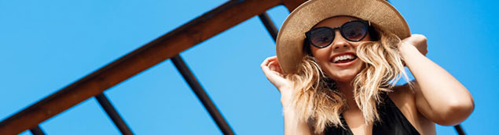
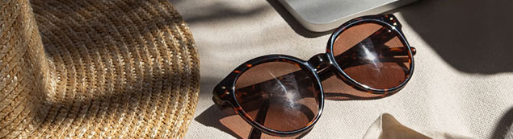
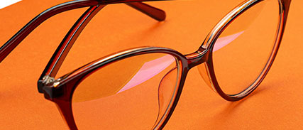

Ahora tus gafas de Sol también pueden llevar tu fórmula óptica, en un lente con diferentes opciones de color

Hasta hace unos años usar gafas era poco cool, muchos lo asociaban con, mal llamados en su momento, nerds.
Hoy vivimos en una época en la cual las gafas son un accesorio más que definen tu estilo. Así como tu ropa o tu reloj. Las gafas son ahora útiles para mejorar tu visión y para completar un look perfecto.
Usar gafas se creía cuadriculado, por lo que muchos look perfecto las evitaban o solo usaban

Hoy vivimos en una época en la cual las gafas son un accesorio más que definen tu estilo. Así como tu ropa o tu reloj. Las gafas son ahora útiles para mejorar tu visión y para completar un look perfecto.
Hasta hace unos años usar gafas era poco cool, muchos lo asociaban con, mal llamados en su momento, nerds. Usar gafas se creía cuadriculado, por lo que muchos las evitaban o solo usaban lentes de contacto ¿Recuerdas? ¡Cuánto ha cambiado desde entonces!

Hasta hace unos años usar gafas era poco cool, muchos lo asociaban con, mal llamados en su momento, nerds.
Agosto 25
Hasta hace unos años usar gafas era poco cool, muchos lo asociaban con, mal llamados en su momento, nerds.
Septiembre 30
Hasta hace unos años usar gafas era poco cool, muchos lo asociaban con, mal llamados en su momento, nerds..
Marzo 14
Copyright © 2026 - www.eoptical.com